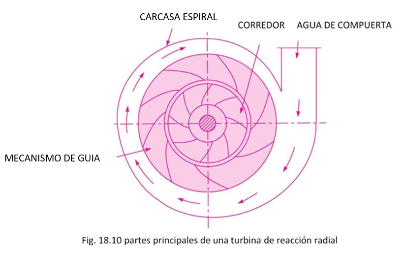

Las turbinas de flujo radial son aquellas turbinas en las que el agua fluye en dirección radial. El agua puede fluir radialmente de afuera hacia adentro (es decir, hacia el eje de rotación) o de adentro hacia afuera. Si el agua fluye de afuera hacia adentro a través del rodete, la turbina se conoce como turbina de flujo radial hacia adentro. Y si el agua fluye de adentro hacia afuera, la turbina se conoce como turbina de flujo radial hacia afuera.
Turbina de reacción significa que el agua en la entrada de la turbina posee energía cinética y energía de presión. A medida que el agua fluye a través del corredor, una parte de la energía de presión se transforma en energía cinética. Así, el agua a través del corredor está bajo presión. El corredor está completamente encerrado en una carcasa y carcasa herméticas y el corredor está siempre lleno de agua.
Partes principales de una turbina de reacción de flujo radial.
Las partes principales de una turbina de reacción de flujo radial son:
1. Carcasa.
2. Mecanismo de guía.
3. Corredor.
4. Proyecto de tubo.
1. Carcasa. Como se mencionó anteriormente, en el caso de una turbina de reacción, la carcasa y el rodete siempre están llenos de agua. El agua de las compuertas ingresa al encamisado que tiene forma de espiral en el cual el área de la sección transversal del encamisado va disminuyendo gradualmente. La carcasa rodea completamente el rodete de la turbina. La carcasa, como se muestra en la Fig. 18.10, tiene forma de espiral, de modo que el agua pueda ingresar al canal a velocidad constante en toda la circunferencia del canal. La carcasa está hecha de hormigón, acero fundido o chapa de acero.
2. Mecanismo de guía. Consiste en una rueda circular estacionaria alrededor del rodete de la turbina. Las paletas de guía estacionarias están fijadas en el mecanismo de guía. Los álabes guía permiten que el agua golpee los álabes fijos en la corredera sin choque en la entrada. También mediante una disposición adecuada, la anchura entre dos paletas adyacentes del mecanismo de guía puede modificarse de modo que pueda variarse la cantidad de agua que incide sobre la corredera.
3. Corredor. Es una rueda circular sobre la que se fijan una serie de paletas curvas radiales. La superficie de las paletas se hace muy suave. Las paletas curvas radiales tienen una forma tal que el agua entra y sale del corredor sin impacto. Los corredores están hechos de acero fundido, hierro fundido o acero inoxidable. Están encajados en el eje.

4. Tubo de tiro. La presión a la salida del corredor de una turbina de reacción es generalmente menor que la presión atmosférica. El agua de salida no puede descargarse directamente a la pista de cola. Se utiliza un tubo o tubería de área gradualmente creciente para descargar el agua desde la salida de la turbina hasta la pista de cola. Este tubo de área creciente se llama tubo de tiro.
Bansal, R.K. (2010). Fluid Mechanics and Hydraulic Machines. 9 ed., pag 877-878. India: Laxmi Publications (P) LTD